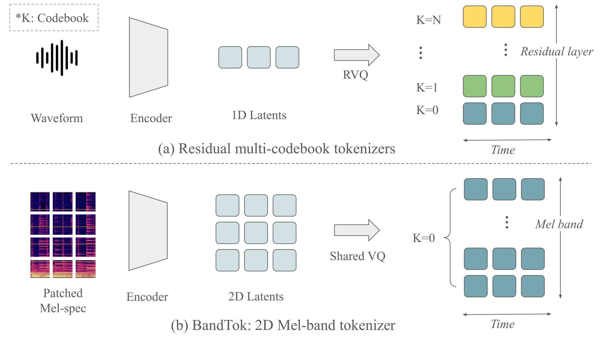
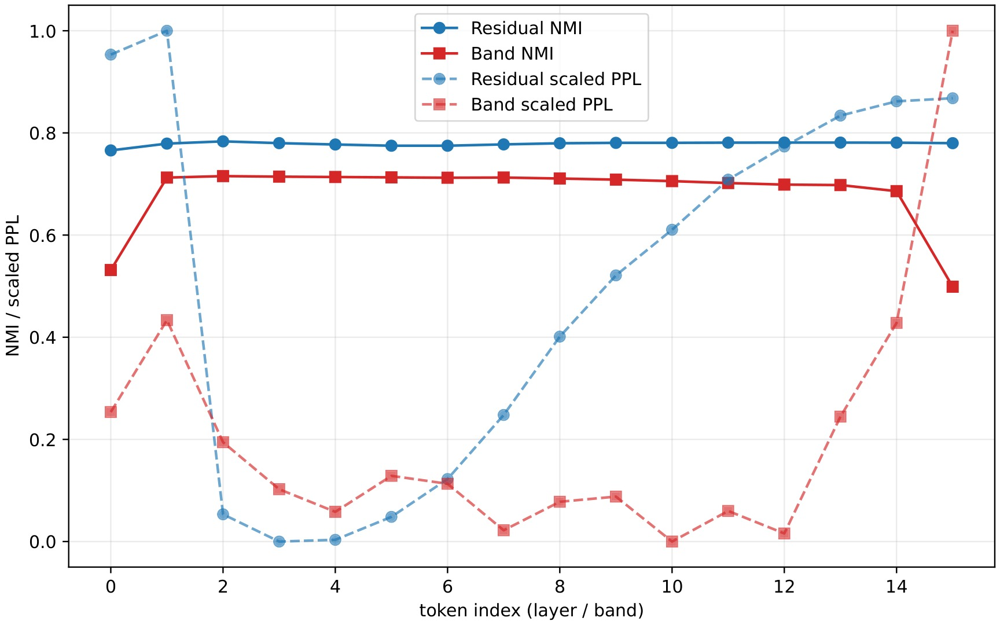

Abstract
Autoregressive music generation depends strongly on the audio tokenizer. Existing high-fidelity codecs often use residual multi-codebook quantization, which preserves reconstruction quality but complicates language modeling after sequence flattening, as the residual hierarchy imposes strong sequential dependencies and can amplify error accumulation. We propose BandTok, a generation-oriented 2D Mel-spectrogram tokenizer that represents each frame with Mel-frequency band tokens from a single shared codebook. This design yields a physically interpretable time-frequency token grid with a more independent token structure, making it better suited for autoregressive modeling. BandTok improves reconstruction with a multi-scale PatchGAN objective and EMA codebook updates. We further introduce an autoregressive language model with 2D Rotary Position Embedding (2D RoPE) to preserve temporal and frequency-band structure during generation. Experiments show that BandTok improves over residual-codebook tokenizers and achieves strong results in a data-limited setting.
Framework Overview


Generation Demos
Non-Cherry-Picked Results
Text prompts from the SongDescriber Dataset.
Citation
@inproceedings{cheng2026modeling,
title = {Modeling Music as a Time-Frequency Image: A 2D Tokenizer for Music Generation},
author = {Cheng, Yuqing and Ma, Xingyu and Yu, Guochen and Gu, Xiaotao},
booktitle = {IEEE ICME 2026 Challenge Papers},
year = {2026}
}